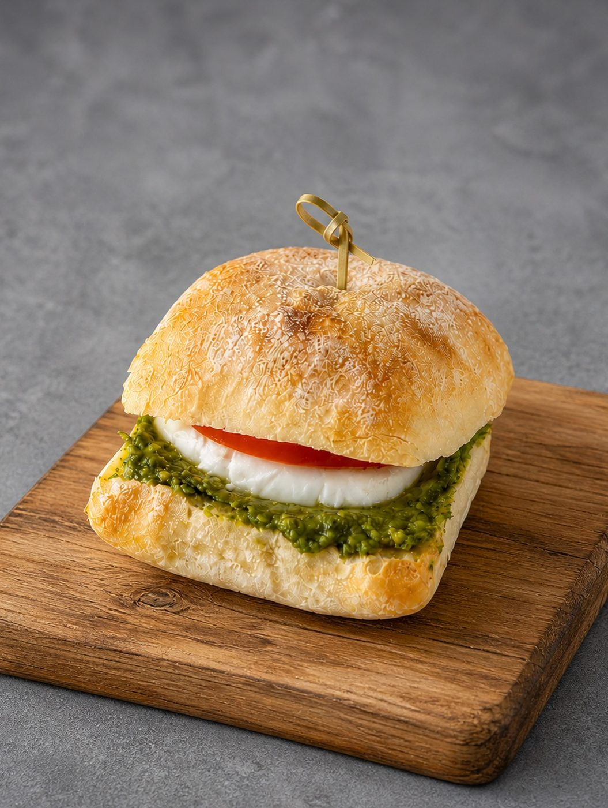
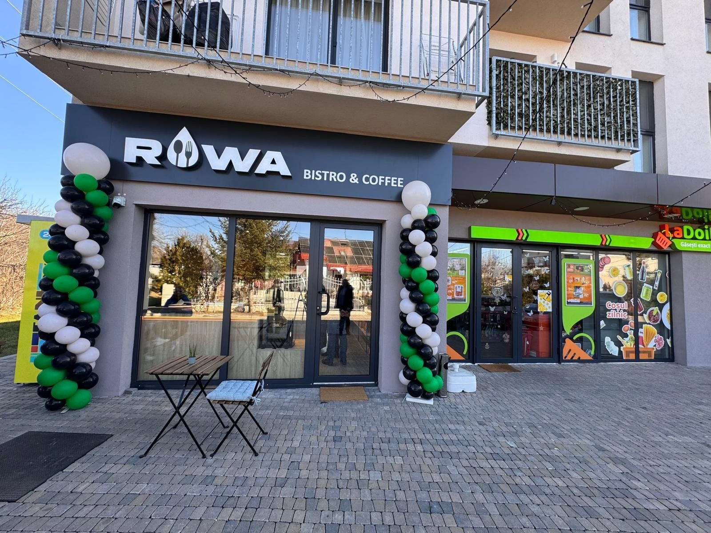
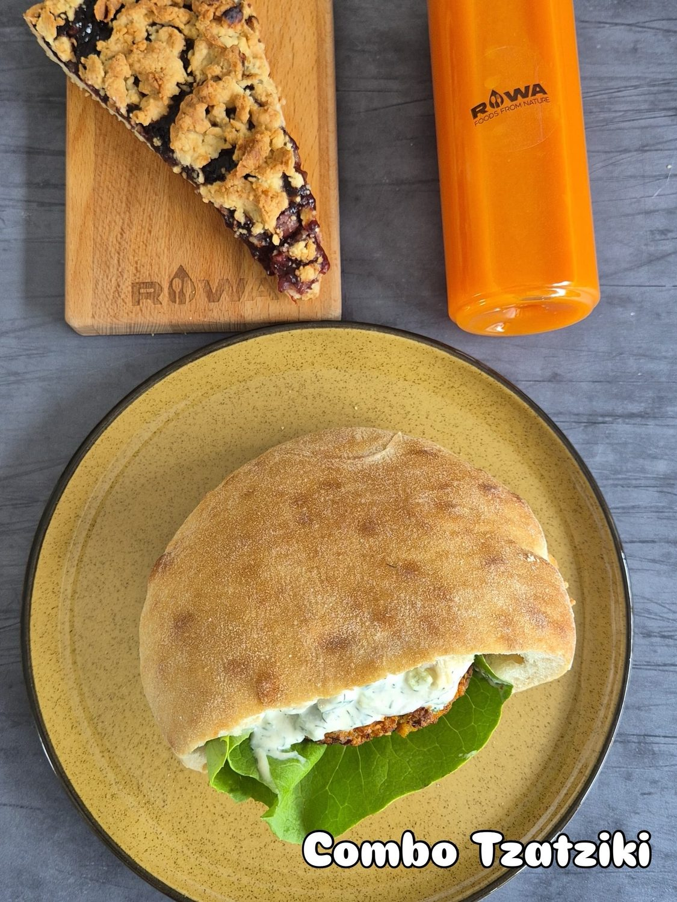
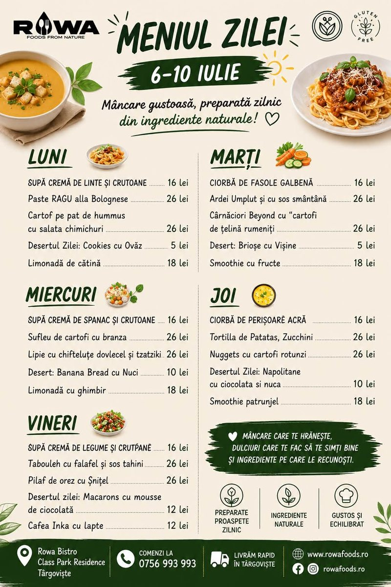
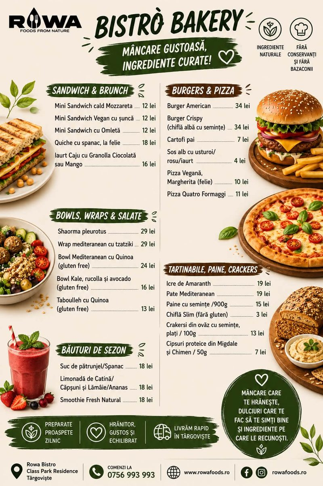
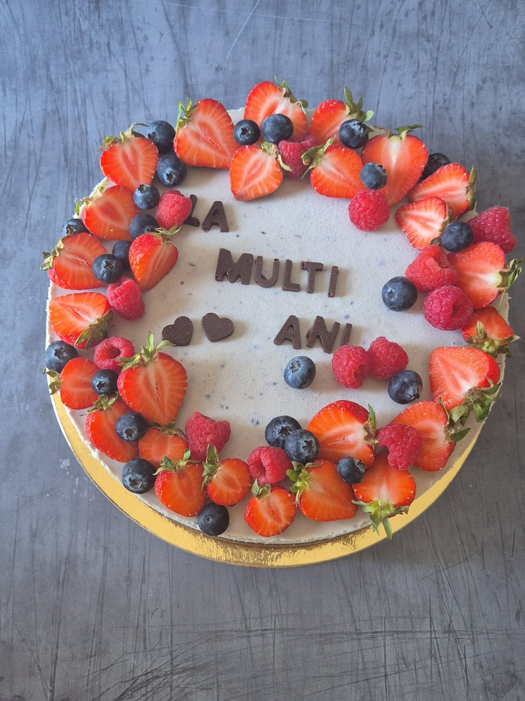
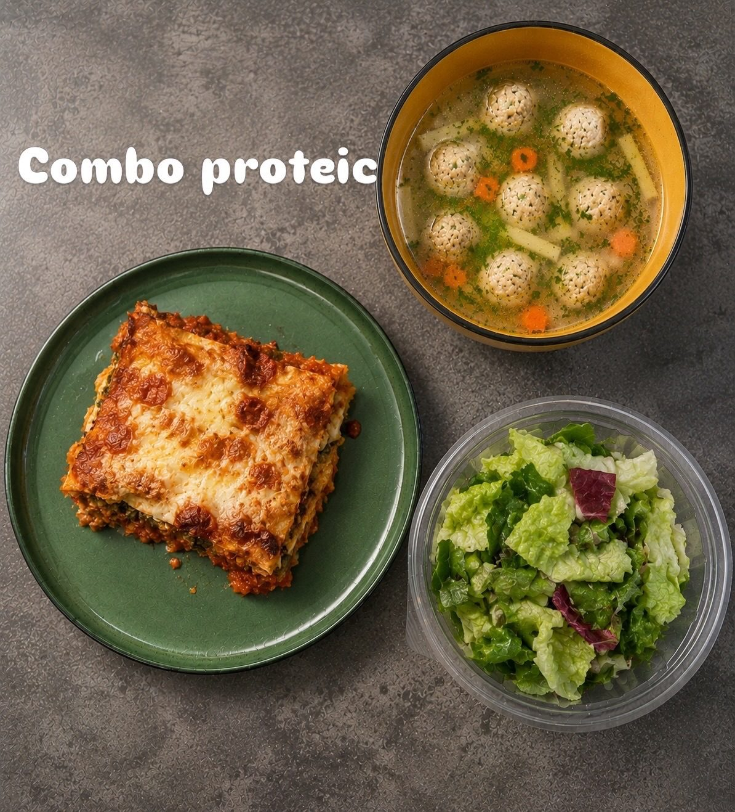
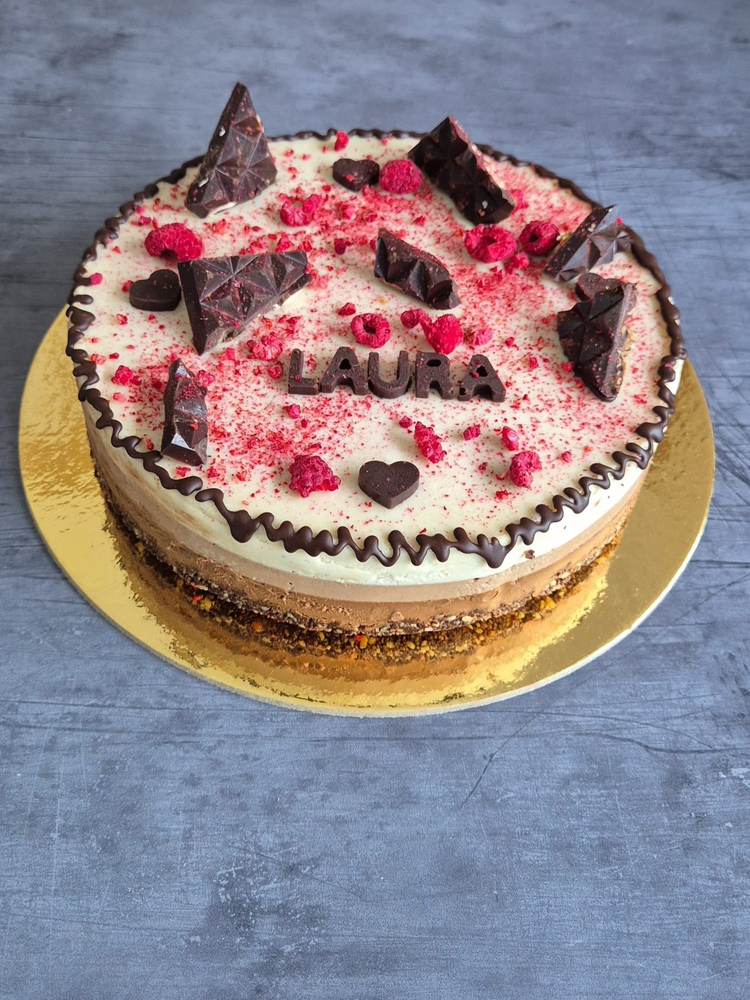

Mini Sandwich cald Mozzarella
12 leiSandwich cald cu mozzarella, ingrediente naturale.

La ROWA gătim sănătos în inima Târgoviștei: bowl-uri și burgeri, dulciuri fără zahăr, sucuri energy & detox stoarse proaspăt și un meniu al zilei schimbat în fiecare zi. Bistro, sweets, coffee & catering.
ROWA înseamnă mâncare și dulciuri fără zahăr, sucuri energy & detox făcute proaspăt și preparate din ingrediente naturale, fără conservanți și fără bazacoli. Gătim zilnic, la Class Park Residence din Târgoviște.
De la bowl-uri cu quinoa și avocado, la burgeri vegetali gluten free, falafel, shaorma de pleurotus, pizza la felie și torturi fără zahăr — fiecare farfurie e gândită să te lase sătul și cu energie, nu greoi.
Poți lua prânzul la noi, poți comanda la birou sau acasă, ori ne poți lăsa nouă un catering pentru evenimentul tău. Oricum ar fi, mâncarea rămâne curată și proaspătă.

Trei motive pentru care târgoviștenii revin la noi zi de zi.
Preparatele și dulciurile noastre folosesc îndulcitori și arome naturale — fără zahăr adăugat, fără conservanți, fără bazacoli.
Limonade naturale, smoothie-uri și sucuri energy & detox stoarse pe loc, din fructe, legume și verdețuri — nimic la pungă.
Prânz zilnic, dulciuri de casă, cafea și un serviciu de catering pentru birou, acasă sau evenimente. Comenzi rapide în Târgoviște.
Supă sau ciorbă, un fel principal, un desert fără zahăr și o băutură naturală — combo prânz (supă + fel principal) la 36 lei. Meniul se schimbă zilnic.
Supă / ciorbă + fel principal. Comenzile plasate între 08:00–11:00 sunt livrate cu prioritate, începând cu ora 12:00.
Comandă prânzul
Meniul zilei · supe, feluri principale, deserturi & smoothie-uri
Bistrò Bakery · sandwich-uri, burgeri, bowl-uri & băuturi de sezonCâteva dintre preparatele și dulciurile care te așteaptă la noi.

Torturi aniversare fără zahăr
Combo proteic
Dulciuri fără zahărComenzile plasate între 08:00 – 11:00 se livrează cu prioritate, începând cu ora 12:00.